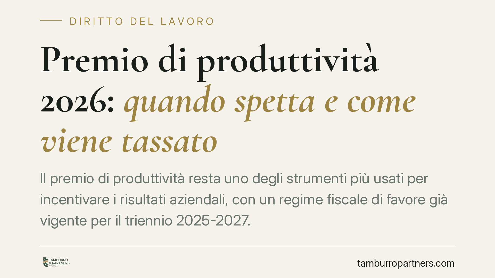

Premio di produttività 2026: quando spetta e come viene tassato
Il premio di produttività resta uno degli strumenti più usati per incentivare i risultati aziendali, con un regime fiscale di favore già vigente per il triennio 2025-2027. Capire quando spetta, come si calcola la tassazione e quali adempimenti servono è decisivo per lavoratori e datori di lavoro che vogliono applicare correttamente l'agevolazione ed evitare contestazioni.

Il quadro generale
Il premio di produttività è una somma variabile corrisposta al lavoratore in funzione di incrementi misurabili di produttività, redditività, qualità, efficienza o innovazione. Non è una liberalità né un elemento fisso della retribuzione: il suo tratto distintivo è il collegamento a obiettivi incrementali verificabili nell'arco di un periodo definito.
La disciplina di riferimento resta quella introdotta dalla Legge di Stabilità 2016 (L. n. 208/2015, art. 1, commi 182-189), che ha stabilizzato l'imposta sostitutiva sui premi di risultato erogati in esecuzione di contratti collettivi aziendali o territoriali.
Il regime fiscale: le aliquote
Sul premio si applica un'imposta sostitutiva dell'IRPEF e delle relative addizionali, in luogo della tassazione ordinaria. Occorre distinguere con precisione le aliquote:
- 10%: aliquota ordinaria prevista a regime dalla L. n. 208/2015.
- 5%: aliquota ridotta per il triennio 2025-2027, introdotta dalla Legge di Bilancio 2025 (L. n. 207/2024), che ha prorogato e abbassato il prelievo rispetto all'ordinario.
Eventuali ulteriori riduzioni per il 2026 vanno verificate direttamente sul testo della Legge di Bilancio pubblicato in Gazzetta Ufficiale: consigliamo di non applicare aliquote diverse dal 5% finché la norma non sia certa e vigente. Ad esempio, su un premio di 5.000 euro, l'imposta al 5% corrisponde a 250 euro.
I requisiti per l'agevolazione
L'imposta sostitutiva opera entro limiti precisi. Il premio agevolabile non può superare 3.000 euro lordi annui, soglia elevabile a 4.000 euro nelle aziende che prevedono il coinvolgimento paritetico dei lavoratori nell'organizzazione del lavoro.
Sul piano soggettivo, l'agevolazione spetta ai lavoratori del settore privato titolari, nell'anno precedente, di un reddito da lavoro dipendente non superiore a 80.000 euro. Superata tale soglia, il premio è assoggettato a tassazione ordinaria.
Il presupposto sostanziale: obiettivi reali e deposito dell'accordo
L'agevolazione non è automatica. Richiede due condizioni concorrenti:
- Premio legato a indicatori incrementali reali. Il contratto deve individuare parametri oggettivi e misurabili (ad esempio incrementi di fatturato, riduzione degli scarti, miglioramento della qualità). Non basta un obiettivo generico o già raggiunto: deve esserci un incremento effettivamente conseguibile e verificabile nel periodo congruo.
- Deposito dell'accordo presso l'Ispettorato territoriale del lavoro. L'accordo collettivo che istituisce il premio va depositato telematicamente entro trenta giorni dalla sottoscrizione, con autodichiarazione di conformità. In assenza di deposito, l'agevolazione fiscale non si applica.
La tutela del lavoratore
Un profilo spesso trascurato riguarda il comportamento del datore di lavoro. Se l'azienda, pur avendo pattuito il premio, omette di assegnare gli obiettivi o di renderli verificabili, il lavoratore può risultare privato della possibilità concreta di conseguire la somma.
La giurisprudenza di legittimità, in tema di danno da perdita di chance, riconosce tutela quando il lavoratore dimostri l'esistenza di una concreta e apprezzabile possibilità di conseguire un risultato, frustrata dalla condotta del datore. Non si tratta del riconoscimento automatico del premio, ma del risarcimento della probabilità perduta, da valutare caso per caso. Resta onere del lavoratore allegare e provare gli elementi su cui fondare la richiesta.
Cosa fare in concreto
- Verificate la fonte contrattuale. Accertate che il premio sia previsto da un contratto collettivo aziendale o territoriale, non da un atto unilaterale del datore.
- Controllate il deposito all'ITL. Pretendete evidenza del deposito telematico dell'accordo: senza, l'agevolazione fiscale decade.
- Conservate la documentazione sugli obiettivi. Raccogliete i parametri assegnati, le comunicazioni e i dati di consuntivo utili a dimostrare il raggiungimento o l'impossibilità di raggiungimento imputabile all'azienda.
- Verificate il requisito reddituale. Controllate che il reddito da lavoro dipendente dell'anno precedente non superi 80.000 euro prima di applicare l'imposta sostitutiva.
- Confermate l'aliquota applicabile. Applicate il 5% previsto per il triennio 2025-2027, salvo diversa misura espressamente confermata dalla Legge di Bilancio in Gazzetta Ufficiale.
Conclusione
La chiarezza nella definizione degli obiettivi è il vero presupposto di validità del meccanismo. Un premio ancorato a indicatori incerti o non misurabili espone il datore a contestazioni fiscali e a possibili richieste risarcitorie, e priva il lavoratore della certezza sul proprio diritto. La corretta redazione e il tempestivo deposito dell'accordo sono, in questo quadro, il passaggio decisivo.
Ogni storia di lavoro ha i suoi tempi.
Se gestisci HR e vuoi un confronto su contenzioso, ispezioni o licenziamenti, scrivi allo studio. Ti rispondiamo entro un giorno lavorativo.